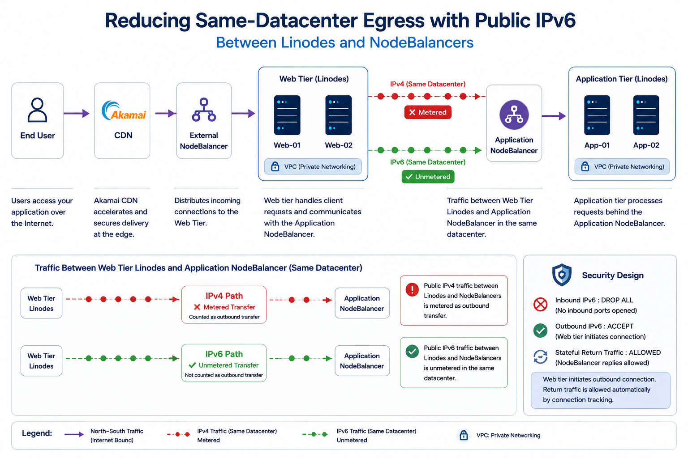
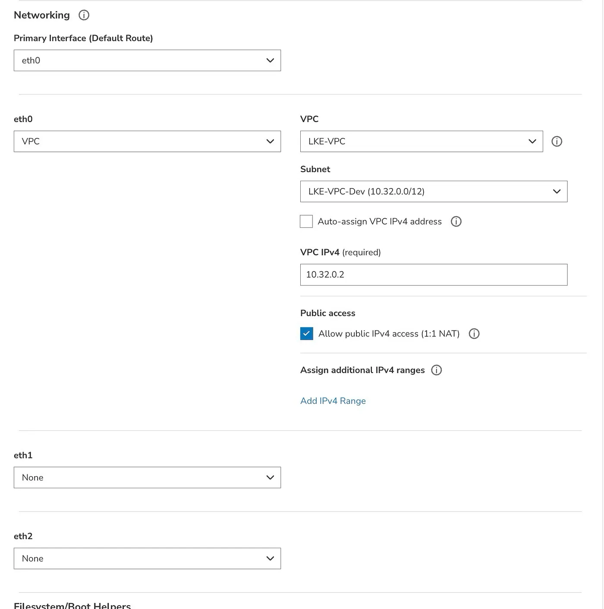
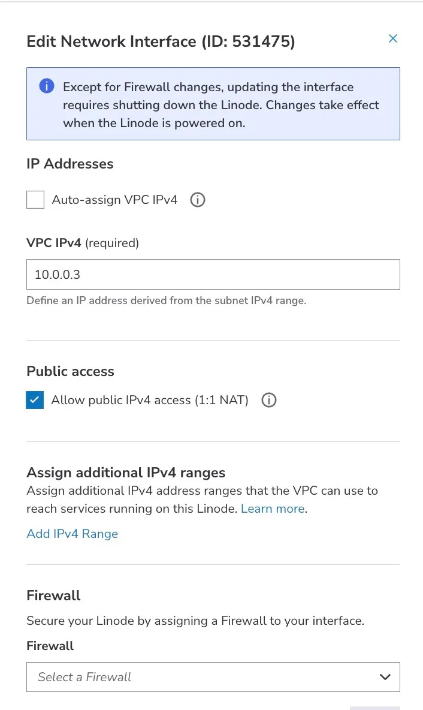
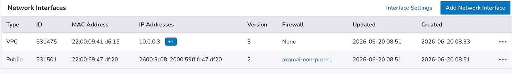
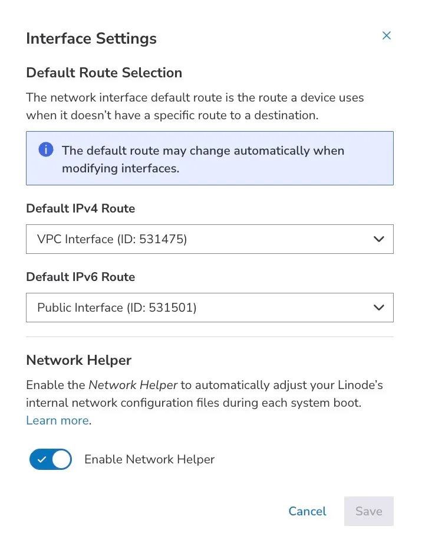
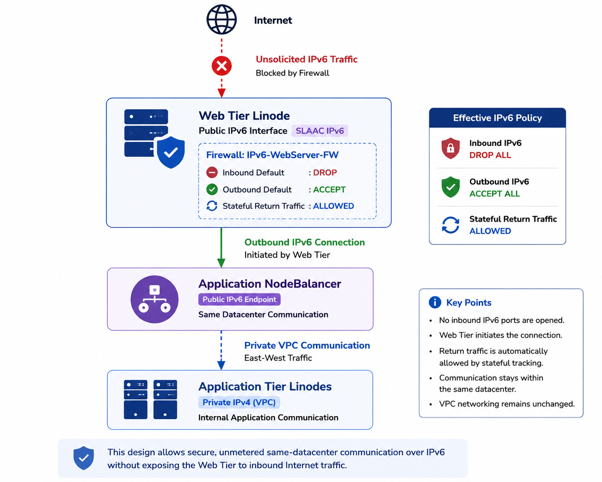

Reducing Same-Datacenter Egress: Public IPv6 Between Linodes and NodeBalancers
Audience: Platform engineers, cloud architects, and operations teams running multi-tier applications on Akamai Cloud Compute.
Summary: When web tier Linodes communicate with an Application NodeBalancer over public IPv4—even within the same datacenter—that traffic can count as metered outbound network transfer. Routing the same hop over public IPv6 in the same datacenter aligns with Akamai’s unmetered transfer policy for that path. VPC-only Linodes do not receive public IPv6 by default, so this article explains the networking constraint, the target architecture, and an open-source automation tool that adds a public IPv6-only interface while preserving VPC settings.
Architecture and business context
Akamai has historically been known for its globally distributed edge platform: CDN, application delivery, security, and traffic acceleration close to end users. After Akamai acquired Linode, that edge platform was extended with cloud compute primitives such as Linodes, VPCs, NodeBalancers, object storage, Kubernetes, and managed databases. This combination makes it possible to run origin and application workloads closer to Akamai’s delivery platform while keeping architecture patterns familiar to cloud infrastructure teams.
One common production layout on Akamai Cloud Compute looks like this:
End user → Akamai CDN → External NodeBalancer → Web tier Linodes → Application NodeBalancer → Application tier LinodesIn this pattern, the External NodeBalancer handles north-south ingress traffic from Akamai CDN to the web tier. The second load-balancing layer is an Application NodeBalancer: a standard NodeBalancer that is not intended to be consumed directly by end users, but is used by the web tier to distribute requests to application-tier Linodes.
That second hop is the important one. From an application owner’s perspective, the web tier to Application NodeBalancer path feels internal because both sides are in the same datacenter and the traffic never needs to leave the cloud region. However, if the web tier reaches the Application NodeBalancer using its public IPv4 address, the transfer classification can be different from what the operations team expects.
In one customer deployment, an equivalent architecture on another hyperscaler reported approximately 4 TB of daily egress. On Akamai Cloud Compute, the same workload reported approximately 32 TB of daily egress. Investigation showed that a significant portion of the delta was not internet-bound traffic from end users, but east-west traffic between web servers and the Application NodeBalancer—traffic the operations team treated as internal.
The Application NodeBalancer was reached via its public IPv4 address because NodeBalancers expose public endpoints and do not provide a VPC-private front door comparable to an internal load balancer in some other environments. That design detail matters because same-datacenter public IPv4 traffic is classified differently from same-datacenter IPv6, VLAN, private IPv4, or VPC traffic.

Figure 1: Traffic flow and transfer classification. The optimization happens on the Web Tier Linodes to Application NodeBalancer path, where public IPv4 is replaced with public IPv6 for same-datacenter communication.
Key insight
The optimization described in this article does not require application code changes, VPC redesign, NodeBalancer modifications, or additional proxies and gateways.
The only change is the network path:
Public IPv4
↓
Public IPv6This small architectural adjustment allows Web Tier Linodes to communicate with Application NodeBalancers using an unmetered same-datacenter IPv6 path while preserving the existing application architecture.
How network transfer is classified
Akamai Cloud documents network transfer rules in Network transfer usage and costs. The following summary is relevant to Linode-to-NodeBalancer paths in the same datacenter.
Generally unmetered
- All inbound network transfer
- Outbound transfer from Linodes and NodeBalancers to services in the same datacenter when traffic uses IPv6, private VLAN, or private IPv4 on those services
- Traffic between resources attached to the same VPC
Metered
- Outbound transfer to destinations outside the origin datacenter
- Outbound transfer within the same datacenter when a public IPv4 address is used
- Object Storage egress, where separate rules apply
The documentation explicitly excludes public IPv4 from same-datacenter unmetered transfer because of routing behavior. That classification explains how a local hop—web server to NodeBalancer in one region—can still consume metered outbound transfer when addressed via NodeBalancer public IPv4.
NodeBalancers are equipped with both public IPv4 and IPv6 addresses. Same-datacenter communication over IPv6 between Linodes and NodeBalancers fits the unmetered same-datacenter category described in the network transfer documentation.
Problem statement
The customer’s optimization goal was straightforward: move web-tier to Application NodeBalancer traffic from public IPv4 to public IPv6 within the same datacenter.
Implementation encountered a platform constraint:
- Most new Linode deployments use a VPC-first network layout for private connectivity.
- VPC interfaces are designed for private connectivity and do not provide a public IPv6 address by themselves.
- Public IPv6 is delivered through a separate public interface using SLAAC.
Without that second interface, applications configured to use the NodeBalancer IPv6 address could not establish connectivity even though the NodeBalancer side was already IPv6-capable.
Before vs after
Before
Web Tier Linodes
↓
Public IPv4
↓
Application NodeBalancer
❌ Metered transferAfter
Web Tier Linodes
↓
Public IPv6
↓
Application NodeBalancer
✅ Unmetered same-datacenter transferSolution approach
The fix is not to replace the application architecture or move traffic away from NodeBalancers. The fix is to make the web-tier Linodes dual-interface:
- Keep the existing VPC interface for private application connectivity and existing NAT behavior.
- Add a separate public interface only for public IPv6 SLAAC.
- Update the web tier, reverse proxy, or service configuration so the NodeBalancer hop uses the NodeBalancer IPv6 endpoint instead of its public IPv4 endpoint.
This preserves the VPC-first design while creating an IPv6 path for high-volume same-datacenter traffic. Operationally, this should be rolled out in maintenance windows because interface changes can require the Linode to be shut down and booted again.
Manual implementation overview
Before automating the pattern, it is useful to understand the manual change sequence. The exact Cloud Manager screens and API payloads can vary depending on whether the Linode uses the newer Network Interfaces model or the older Configuration Profile interface model, but the intent is the same.
- Confirm the current network layout. Identify the web-tier Linode, the VPC interface, whether 1:1 NAT is enabled, and the Application NodeBalancer IPv6 endpoint.
- Schedule a maintenance window. Interface changes can require the Linode to be powered off and booted again.
- Snapshot the current interface state. Record the VPC interface, NAT setting, firewall association, and current boot configuration before making changes.
- Add a public interface for IPv6. The target state is a public interface with IPv6 SLAAC and no public IPv4 address.
- Preserve or restore VPC behavior. If the platform temporarily attaches or moves public IPv4 during the change, restore the original VPC and 1:1 NAT settings after the public interface is created.
- Boot and validate the host. Confirm the Linode has a public IPv6 address and a default IPv6 route.
- Update the application path. Change the web tier, reverse proxy, or service configuration to call the Application NodeBalancer over IPv6.
- Validate traffic and billing behavior. Test the IPv6 path and monitor Monthly Network Transfer for the web-tier Linodes.
Cloud Manager screenshots: before and after
The same design can be implemented using Cloud Manager. The screenshots below show the important states to validate during the change.
Initial state: VPC-first Linode
The starting point is a VPC-first Linode where the primary interface is attached to the VPC and the instance does not yet have a separate public IPv6 interface.

Figure 2: Initial state of a VPC-first Linode with a single VPC interface and optional 1:1 NAT enabled.
Existing VPC interface details
Before adding a public interface, record the current VPC IPv4, 1:1 NAT, and firewall settings. These settings should be preserved or restored by the automation.

Figure 3: Existing VPC interface configuration including private IPv4, 1:1 NAT, and firewall association.
After state: dual-interface Linode
After the change, the Linode has both the original VPC interface and a new Public Interface. The Public Interface provides the SLAAC IPv6 address used for same-datacenter communication with the Application NodeBalancer.

Figure 4: Dual-interface Linode with a VPC interface for private networking and a Public Interface providing IPv6 connectivity for same-datacenter NodeBalancer communication.
Route separation
One important aspect of this design is route separation. IPv4 continues to use the VPC interface, while IPv6 uses the Public Interface.

Figure 5: Route separation where IPv4 continues to use the VPC interface while IPv6 traffic is routed through the Public Interface.
Typical validation commands on the web-tier Linode are:
ip -6 addr
ip -6 route
curl -6 http://[<Application-NodeBalancer-IPv6>]For a single server this can be done manually. For a production fleet, the same workflow should be automated so that discovery, snapshots, rollback, and bulk rollout are consistent.
Target network design
The recommended end state adds a dedicated public interface while leaving the VPC interface unchanged:
| Interface | Role | IPv4 | IPv6 |
|---|---|---|---|
| VPC | Private connectivity and existing NAT policy | VPC private address | — |
| Public | Same-datacenter reachability to NodeBalancer | None, IPv6-only target state | SLAAC public IPv6 |
Applications continue to use VPC networking where appropriate. Load-balancer traffic that previously used NodeBalancer public IPv4 moves to the NodeBalancer public IPv6 endpoint.
Security design: public IPv6 without inbound exposure
The first concern with adding a public IPv6 address to a server is usually: does this expose the server directly to the Internet? The recommended design is to treat the new public interface as an outbound-only IPv6 path from the web tier to the Application NodeBalancer.
Recommended firewall: IPv6-WebServer-FW
| Direction | Default policy | Required rule | Reason |
|---|---|---|---|
| Inbound IPv6 | DROP | DROP ALL | No inbound Internet traffic should reach the web server over the new public IPv6 interface. |
| Outbound IPv6 | ACCEPT | ACCEPT | The web server initiates the connection to the Application NodeBalancer IPv6 endpoint. |
No inbound ports need to be opened for this pattern because the connection is initiated by the web server. The Application NodeBalancer sends responses over the already-established connection, and stateful connection tracking allows the return traffic. In other words, the public IPv6 address exists to create an outbound same-datacenter IPv6 path, not to publish a new inbound service.
Security posture: Inbound IPv6 is DROP ALL. Outbound IPv6 is ACCEPT. The server can initiate traffic to the Application NodeBalancer, but direct unsolicited IPv6 traffic from the Internet is blocked.

Figure 6: Security design using a default-deny inbound firewall policy. Public IPv6 is used only for outbound communication with the Application NodeBalancer.
Architecture diagrams
Reference diagram — Traffic path and transfer classification
public IPv6 interface added
public IPv6 interface added
metered same-datacenter transfer
unmetered same-datacenter path
public IPv4 + public IPv6 endpoints
Reference diagram — Dual-interface Linode target state
Existing private connectivity and NAT unchanged
No public IPv4 in target state
Same datacenter
Reference diagram — Automation workflow high level
Get Linode details, status, config profile, and interface generation.
Record existing VPC, NAT, interface, and firewall settings before change.
Power off if needed, add public IPv6 interface, and preserve VPC settings.
Boot instance, confirm IPv6 SLAAC, and test NodeBalancer IPv6 reachability.
Technical deep dive
Akamai Cloud Compute supports two Linode networking models for interface management. The field interface_generation on the Linode object determines which API surface applies:
interface_generation | Name | Primary API base path |
|---|---|---|
linode | Linode Network Interfaces | /v4/linode/instances/{linodeId}/interfaces |
legacy_config | Configuration Profile Interfaces | /v4/linode/instances/{linodeId}/configs/{configId}/interfaces |
Automation should detect this value instead of assuming a single API path. The open-source tool referenced below reads it from GET /linode/instances/{linodeId}.
Shared API operations
| Operation | Method | Path |
|---|---|---|
| Get Linode | GET | /linode/instances/{linodeId} |
| List configuration profiles | GET | /linode/instances/{linodeId}/configs |
| Get configuration profile | GET | /linode/instances/{linodeId}/configs/{configId} |
| Networking / IP summary | GET | /linode/instances/{linodeId}/ips |
| Shut down | POST | /linode/instances/{linodeId}/shutdown |
| Boot | POST | /linode/instances/{linodeId}/boot |
Interface changes should be planned as maintenance operations. Production automation should record the prior power state and restore it after changes.
Network Interfaces model: interface_generation: linode
Preferred workflow: create a public interface with IPv6 SLAAC only. Do not modify the VPC interface or NAT.
Legacy fallback: if the API rejects IPv6-only creation, temporarily disable VPC 1:1 NAT, create a public interface with temporary IPv4, remove public IPv4, and restore VPC NAT from snapshot.
| Step | Method | Path | Notes |
|---|---|---|---|
| Create IPv6-only public interface | POST | /linode/instances/{linodeId}/interfaces | purpose: public, IPv6 SLAAC, empty IPv4 |
| Disable VPC 1:1 NAT fallback | PUT | /linode/instances/{linodeId}/interfaces/{vpcInterfaceId} | Temporary; snapshot NAT first |
| Create public interface fallback | POST | /linode/instances/{linodeId}/interfaces | May attach temporary IPv4 |
| Remove public IPv4 fallback | PUT | /linode/instances/{linodeId}/interfaces/{publicInterfaceId} | Clear IPv4 addresses |
| Restore VPC settings | PUT | /linode/instances/{linodeId}/interfaces/{vpcInterfaceId} | Restore NAT from snapshot |
| Rollback | DELETE | /linode/instances/{linodeId}/interfaces/{publicInterfaceId} | Delete public interface after VPC restore if needed |
List interfaces and save VPC NAT state.
Create public IPv6-only interface. VPC remains unchanged.
If needed, temporarily disable VPC NAT and create public interface.
Remove temporary public IPv4 and restore VPC NAT.
Configuration Profile model: interface_generation: legacy_config
Configuration profiles use a different API tree. Interfaces belong to a config profile, not directly to the Linode root.
| Step | Method | Path | Notes |
|---|---|---|---|
| Disable VPC 1:1 NAT | PUT | /linode/instances/{linodeId}/configs/{configId}/interfaces/{vpcInterfaceId} | Set ipv4.nat_1_1 to empty string, not null |
| Add public interface | POST | /linode/instances/{linodeId}/configs/{configId}/interfaces | purpose: public |
| Restore VPC / NAT | PUT | /linode/instances/{linodeId}/configs/{configId}/interfaces/{vpcInterfaceId} | Reclaim public IPv4 via NAT restore |
| Rollback | DELETE | /linode/instances/{linodeId}/configs/{configId}/interfaces/{publicInterfaceId} | Delete public interface on the config profile |
Select config profile and snapshot VPC interface state.
Temporarily set
nat_1_1 to an empty string.Create the public interface on the config profile.
Restore VPC NAT from snapshot and boot the instance.
Side-by-side comparison
| Topic | Network Interfaces linode | Configuration Profile legacy_config |
|---|---|---|
| Detection | interface_generation: linode | interface_generation: legacy_config |
| Interface API | /instances/{id}/interfaces | /instances/{id}/configs/{configId}/interfaces |
| IPv6-only happy path | Attempted first | Not used; legacy flow |
| VPC NAT during create | Unchanged on happy path | Temporarily disabled, then restored |
| Public IPv4 removal | Explicit PUT to clear IPv4 on fallback path | Reclaimed by restoring VPC 1:1 NAT |
| Cloud Firewall on new public interface | Supported through interface-level firewall assignment | Firewall behavior follows configuration profile interface model |
| Multi-profile Linodes | N/A | Requires --config-id when auto-selection fails |
| Rollback | Delete public interface and restore VPC settings | Delete public interface on config profile and restore VPC settings |
SLAAC and validation
Public IPv6 SLAAC addresses may appear in the API after the instance boots. Post-change validation should include:
ip -6 addr
ip -6 route
curl -6 http://[<NodeBalancer-IPv6>]Monitor Monthly Network Transfer under the Linode Network tab in Cloud Manager to confirm reduced metered egress on web tier instances.
Open-source automation
Now that the manual workflow is clear, the next step is automation. Manual interface changes through Cloud Manager are fine for one or two Linodes, but they do not scale across large fleets, mixed networking models, and rollback-sensitive production windows. I published an open-source reference implementation that automates the same workflow:
Repository: linode-public-ipv6-interface-automation
This tool automates Public IPv6 interface enablement while preserving the existing VPC and NAT behavior of the Linode.
Capabilities
- Auto-detects Network Interfaces vs Configuration Profile APIs
- Snapshots and restores VPC / 1:1 NAT settings
- Dry-run mode for change review
- Bulk execution with CSV input
- Parallel rollout controls and bulk rate limiting
- Rollback support
- Partial-failure recovery, making the workflow safe to re-run
Example commands
Single instance dry-run:
export LINODE_API_TOKEN='…'
python3 linode_add_public_ipv6_interface.py \
--linode-id 88899084 \
--dry-runConfiguration profile with explicit profile ID:
python3 linode_add_public_ipv6_interface.py \
--linode-id 88813501 \
--config-id 92318593 \
--dry-runFleet rollout:
python3 linode_add_public_ipv6_interface.py \
--csv webservers.csv \
--parallel 3 \
--bulk-rate-limit 2 \
--dry-runCSV format: linode_id, optional config_id, optional firewall_id.
Operational recommendations
- Validate transfer classification against the official Akamai Cloud Compute network transfer documentation for your region and service mix.
- Run dry-run first on representative instances from each networking model in the fleet.
- Document NodeBalancer IPv6 endpoints and update application or proxy configuration to prefer IPv6 for same-datacenter hops.
- Monitor network transfer pools in Cloud Manager throughout the migration window.
- Use rollback if an instance must revert to the pre-change interface layout.
When to apply this pattern
Appropriate
- High-volume same-datacenter traffic between Linodes and NodeBalancers over public IPv4 today
- VPC-first Linodes that require a second public interface for IPv6
- Fleet-wide migrations with API-driven change control
Requires additional design
- Workloads that must not use public addressing at all; evaluate VLAN or VPC routing alternatives
- Cross-region NodeBalancer access, where different transfer rules apply
- Environments where IPv6 path validation is not yet automated
Conclusion
Same-datacenter traffic is often assumed to be free or unmetered. However, the underlying network path matters.
In this case, changing the communication path from public IPv4 to public IPv6 allowed the customer to preserve the existing architecture while optimizing the transfer path.
The VPC architecture remained unchanged. Security remained unchanged. The application remained unchanged. Only the network path changed.
Sometimes, the simplest architectural changes deliver the most meaningful operational improvements.
Key takeaways
- Public IPv4 traffic within the same datacenter may still be metered.
- Public IPv6 between Linodes and NodeBalancers can provide an unmetered transfer path.
- Existing VPC networking remains unchanged.
- No inbound IPv6 ports need to be opened.
- The process can be fully automated using the open-source project.
- Small network changes can create meaningful cost optimizations.
Related documentation
- Network transfer usage and costs
- IPv6 on Linodes
- Linode interfaces
- Select network interfaces for new Linodes
- Getting started with NodeBalancers
About the author
Sandip Gangdhar
Senior Technical Solutions Architect at Akamai Connected Cloud specializing in Kubernetes, networking, cloud migration, platform engineering, and open-source infrastructure.
Connect with me
- Website: sandipgangdhar.com
- GitHub: github.com/sandipgangdhar
- Open Source Project: linode-public-ipv6-interface-automation
- LinkedIn: linkedin.com/in/ssandippggangdhar